№15 Флажки
Перед разбором: минимальный Питон.
Задание имеет несколько прототипов (я насчитал 4), один из которых (с числовыми отрезками) быстрее решать руками, нежели кодом. Остальные 3 прототипа довольно легко прогаются.
Критически важно знать логические законы для прототипа, который решается руками. Вам может показаться, что последний прототип - это задание из разряда “очень неприятно”, но, уверяю вас, это не так. Стоит порешать их штучек 10-15 и все, вы станете неотразимы.
Подлянка
15ый номер - это один из тех номеров, где ФИПИ решило подложить свинью сдающим в 2026 году. Здесь начали встречаться задания с большими числами, которые требуют дополнительных действий в коде по поводу его оптимизации. Разумно ожидать такую же тенденцию в будущем. Об этом будем говорить отдельно.
В то же время, задания с большими числами поддаются решению руками. Однако, зная, что лишняя когнитивная нагрузка из разряда “проанализировать что происходит” никому не нужна, я постараюсь модифицировать именно код. Не значит, что думать не придется, но, на мой взгляд, это проще.
Разборы
Пример 1)
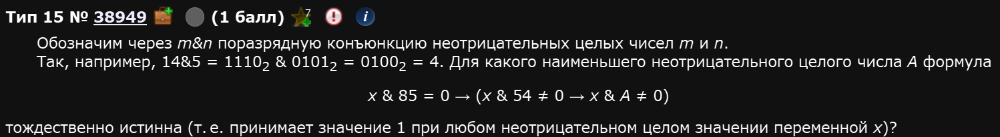
Итак, задание решается перебором (эксплуатируем скорость вычисления машин на полную). Идея такая: мы переберем произвольное кол-во A от 0 до n (где n выбирается методом тыка), для каждого значения А мы прогоним n циклов со значениями x и если хоть в одном из них окажется, что функция ложна - это значения А не подходит.
Начнем с написания функции, которая задана в условии. Ее можно написать по-разному, можно перефразировать итд. Я, для наглядности, буду писать ее в первозданном виде, как она описана в условии:
def f(x,A):
if (x & 85 == 0) <= ((x & 54 != 0) <= (x & A != 0)): #Вот это и есть функция
return True
else:
return FalseНюанс
return Trueиreturn Falseздесь написаны исключительно для вашего лучшего понимания что делает функция. Сама по себе функция - это законченное логическое выражение, оно и так возвращаетTrueв случае1иFalseв случае0.
Обратите внимание:
- Побитовая конъюнкция уже закреплена в питоне и обозначается как &.
- Импликация или следование имеет обозначение <= (легко проверить, что это так, их таблицы истинности совпадают).
| X | Y | F () |
|---|---|---|
| 0 | 0 | 1 |
| 0 | 1 | 1 |
| 1 | 0 | 0 |
| 1 | 1 | 1 |
| X | Y | F (<=) |
|---|---|---|
| 0 | 0 | 1 |
| 0 | 1 | 1 |
| 1 | 0 | 0 |
| 1 | 1 | 1 |
- Нам не нужно ставить какое-то итоговое числовое значение функции, мы просто ретерним истину либо ложь в зависимости от того выполняется ли условие.
А далее мы должны для каждого А чекнуть все-все-все х из определенного диапазона. Диапазон выбирается наугад, может быть больше или меньше (при вашем желании его можно менять, зависит от условия).
for A in range (300):
flag = True
for x in range (300):
if not(f(x,A)):
flag = False
if flag:
print(A)Соединяем:
Что круто: в таких заданиях вторая часть с циклами остается неизменной от задания к заданию. Т.е. вам нужно менять только саму функцию. Программка выдаст список чисел, которые удовлетворяют условию. Нам нужно наименьшее.
Ответ: 34
Сильно назад время отматывать не надо. Задание под номером 15 в ЕГЭ по информатике достаточно сильно изменилось начиная с 2022-2023 годов.
Пример 2)
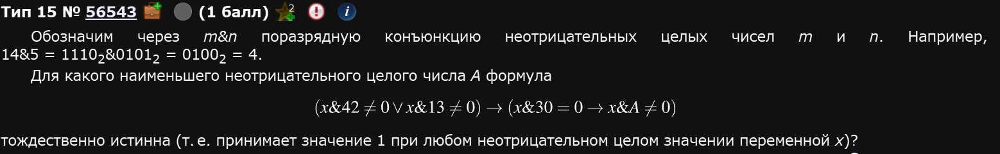
Собсна, все то же самое, только функция другая. Обратите внимание на расставленные скобки. Они нужны здесь для того, чтобы верно расставить приоритеты выполнения операций.
Нужно наименьшее. Берем 33.
Ответ: 33.
Закрепляющая для этого прототипа:
Пример 3)
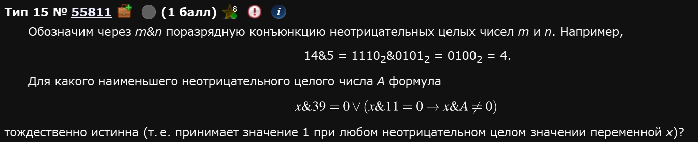
Как и говорилось ранее, от предыдущих отличается лишь функцией:
Ответ: 39.
Рассмотрим другой прототип этого задания:
Пример 4)
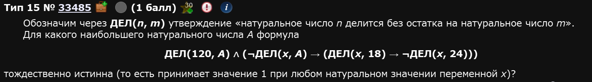
Несмотря на то, что формулировка немного отличается, с формальной точки зрения, ничего не поменялось. Мы все также должны указать правильное логическое условие в нашей функции и все также перебирать значения x и А. Единственное отличие - диапазон стоит взять побольше.
Обратите внимание: каждое действие с ДЕЛ заключено в скобки. Это связано с тем, что без них питон ставит первый приоритет не тем операциям, который нам нужны. В частности, если убрать скобки из-под операции x % A != 0 программа ничего не выдаст. Будьте внимательны и аккуратны (подробный порядок операций распишу позже; Если вы его не увидите до конца разбора этого номера - разбудите автора, мб он просто устал и уснул).
Пример 5)
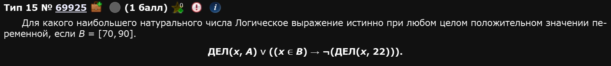
Не стоит пугаться новой для нас операции - включения т.е. проверки на то, что х принадлежит отрезку В. Нам придется отдельно задать этот отрезок в качестве списка и чекать напрямую состоит ли х в В командой x in B. В остальном решение то же самое.
Этот прототип также не отличается оригинальностью,,,
Пример 6)
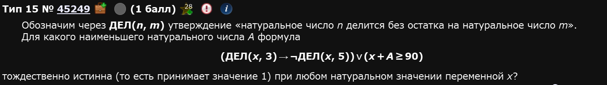
Ответ: 75
Разберем третий прототип: когда даны x и y.
Пример 7)
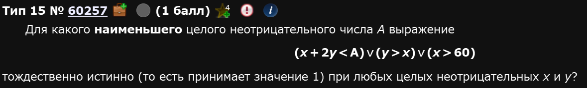
Все что меняется - так это то, что нам придется прогонять еще одну переменную - переменную y, причем в том же месте, что и переменную x. Само собой, теперь наша f(x,A) превратиться в f(x,y,A).
Кста, если ваш комп (почему-то) не вывозит операций можно уменьшить range, ведь нас интересует именно наименьшее возможное.
Ответ: 181
Пример 8)
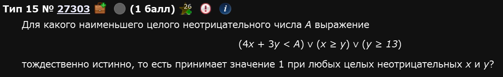
Ровно ничем не отличается от предыдущего, разве что функция другая:
Пример 9)
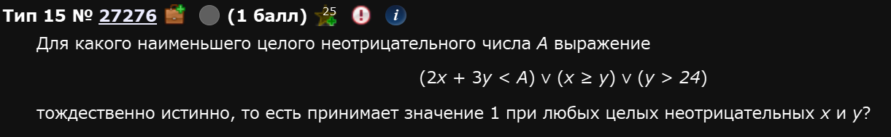
Наконец, рассмотрим прототип задания, который решается ручками. В целом, последний прототип можно запрогать, однако тут надо быть максимально аккуратным, знать особенности работы циклов и нигде не ошибиться, что, конкретно в этом прототипе, будет довольно сложно. Вариант запрогать оставляю на самостоятельность: это отдельный челлендж.
Пример 10)
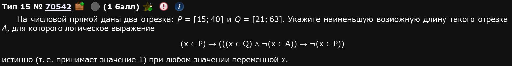
Собсна, для того, чтобы решить это задание нам нужно как-то упростить логическую функцию, которую мы видим. Делается это с помощью законов логики. Вот все, которые нужны для решения подобных заданий (чисто для того, чтобы проще было писать - конъюнкция это умножение т.е. , а дизъюнкция - это ):
| Название | Для конъюнкции | Для дизъюнкции |
|---|---|---|
| Закон повторения (идемпотенции) | ||
| Третьего не дано | ||
| Поглощение | ||
| Коммутативность (переместительный) | ||
| Ассоциативность (сочетательный) | ||
| Дистрибутивность (распределительный) | ||
| Закон двойного отрицания | (это не значит, что этот закон работает только для конъюнкции, он универсален) | - |
| Закон де Моргана | (тут имеется ввиду, что знак отрицания слева стоит над всем выражением, я прост хз эту палочку растянуть) | (опять же, отрицается полное выражение слева) |
| Импликация | - | |
| Эквивалентность | (стрелочка влево и вправо - это эквивалентность, иногда обозначается как тройное равно ”≡”) | - |
| XOR или исключающее или или антиэквивалентность | (иногда обозначают как перечеркнутая эквивалентность) |
Итак, перепишем это выражение и будем последовательно его преобразовывать:
Чтобы было проще работать, давайте введем обозначения: ; ; . Перепишем выражение, используя новые обозначения:
Раскроем внешнюю импликацию:
Раскроем внутреннюю импликацию (ту, которая в скобках):
Для скобки воспользуемся законом де Моргана:
Двойное отрицание А даст просто А:
Скобки с можно опустить:
Опускаем скобки и применяем закон повторения для :
Вуаля, мы получили адекватное выражение.
Теперь, вспоминаем, что отрезок , а отрезок . Стоит нарисовать числовую прямую для наглядности:
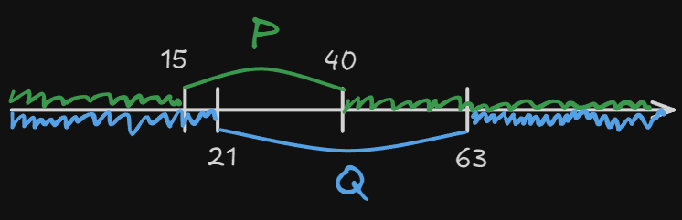
Это я уже сразу нарисовал нужные интервалы (х не принадлежит Р и х не принадлежит Q).
По сути, нам надо дозакрыть числовую прямую так, чтобы какой бы ни был х он бы попал в один из этих трех промежутков (либо А, либо не Р, либо не Q). По рисунку видно, что нам нужен вот такой отрезок:
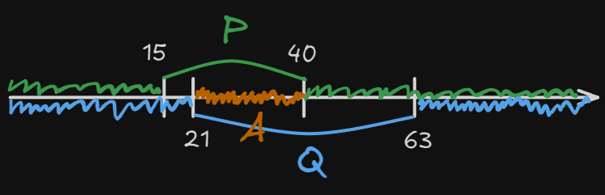
Длина этого отрезка и есть наш ответ. Найти его длину довольно просто: .
Ответ: 19
Пример 11)
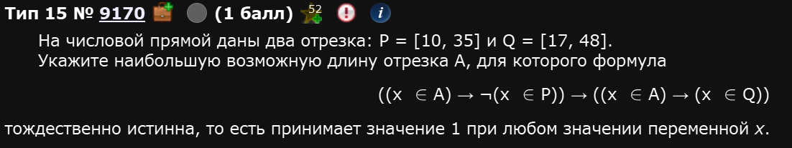
Введем обозначения: ; ; и преобразуем выражение:
Воспользуемся дистрибутивным законом для дизъюнкции:
Изобразим это на числовой прямой:
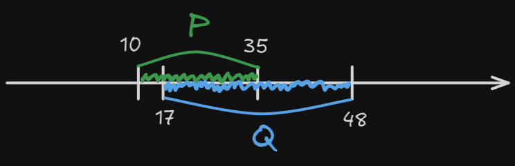
Теперь ситуация такая: вне зависимости от того че там с А, попадает туда х или нет, он лярд проц должен попадать либо в Р либо в Q т.е. в отрезок с 10 до 48, а т.к. нас просят указать именно максимальную длину отрезка А, то она равна .
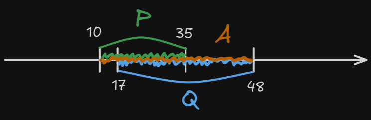
Ответ: 38
Пример 12)
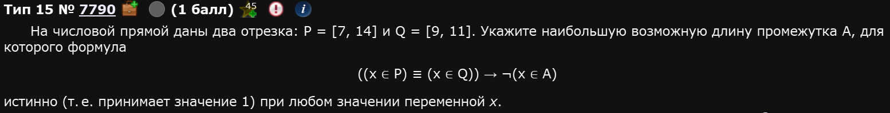
Обозначения: ; ; .
В данном случае лучше на этом остановиться. Исключающее или работает так: оно включает все, кроме пересечения множеств:
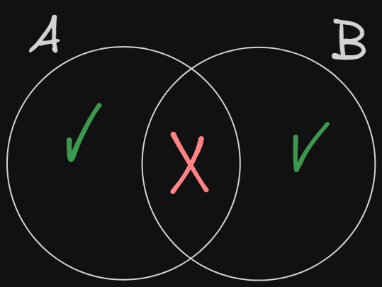
Нарисуем числовую прямую и отметим на ней наши Р и Q:
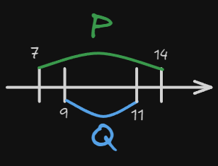
И изобразим подходящие А:
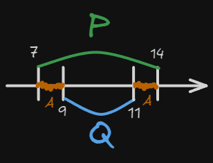
Просят наибольший. Из этих двух наибольший имеет длину
Ответ: 3
Решение 4ого прототипа кодом
В чем проблема решения 4ого прототипа 15ого номера кодом? В том, что подходов много и все они в относительно равной степени правдивы. Универсальность остается под вопросом в случае отдельных представителей 15ого номера.
Однако, я все равно расскажу.
Первый способ
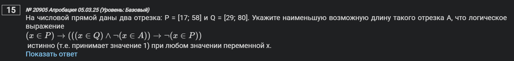
Идея такая: мы формируем нашу логическую функцию как функцию в python, перебираем значения из наших множеств и если так станется, что f(x) == 1 for x in d - это будет истинной всегда, тогда мы нашли наш отрезок А.
Самая мутная строка здесь - это d = [y for x in (17, 29, 58, 80) for y in (x, x - 0.1, x + 0.1)]. Из плюсов - она шаблонная. Из минусов: непонятно, что она вообще делает.
Эта строка для каждого граничного значения x из кортежа (17, 29, 58, 80) формирует по 3 значения x, x - 0.1, x + 0.1 и записывает всех их в список d. Т.е., фактически, в d записаны значения [17, 16.9, 17.1, 29, 28.9, 29.1, 58, 57.9, 58.1, 80, 79.9, 80.1]. Теперь главный вопрос - зачем, а главное: зачем?
Дело в том, что истинность выражения может меняться только при переходе через границы P, Q, A. Мы заранее знаем границы Pи Q: 17, 29, 58, 80. Поэтому мы тестируем: сами границы и точки чуть левее и чуть правее от границ, чтобы уловить различия между значениями функций.
А потом мы в a1 и a2 будущего отрезка A тоже перебираем по множеству d. Таким образом, узнаем наилучший отрезок A, который делает формулу истинной. Как-то так.
Второй способ
Простой и банальный перебор. ВАЖНО: этот код нужно проверить, я его мало проверял и в нем, на самом деле, есть нюансы.
- Нам не обязательно задавать всю длину отрезка от
-infдоinf, достаточно просто большого с определенным шагом. - Отрезки задаются также, как и до этого, в первом способе
- Функция переписывается из условия
- Отрезок
Aизначально будет равен 0, аf != 1, если просят наименьший и наоборот, если наибольший.
for x in [k * 0.25 for k in range (-10000, 10000)]
A = 0
P = 13 <= x <= 27
Q = 24 <= x <= 36
f = P <= (Q and A)
if f != 1:
print(x)Такой код выводит вам числа от и до. Разница между максимальным и минимальным числом в терминале - это и есть ваш ответ.
Авось способ
Есть еще вот такая идея:
Этот код - полная туфта. Основывается он на том, что в большинстве заданий 4ого прототипа 15ого номера в результате логических преобразований получается функция not(P) + not(Q) + A. Естественно, надеяться на это можно, но не нужно,,,
Иные варианты
Еще есть два вот таких варианта, я их оставлю без комментариев.
Вот дальше и начинается свинство
Пример 13) Большие числа и способ побыстрее
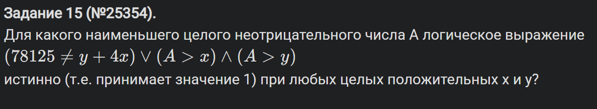
В чем проблема? Вот в этом условии: 78125 != y + 4x. Во-первых, в связи с ним надо перебирать А в диапазоне от 0 до 100_000 хотя бы. Во-вторых - х и у в диапазоне ну хотя бы 80_000. Т.е. это дает нам по итогу вот такой код:
Так вот, проблема в числе перебора: 100_000 * 80_000 * 80_000. Это вот столько: 640 000 000 000 000. Это типа много окда. Даже на домашних компах будет долго считать, а на школьных и подавно. Поэтому нам надо как-то упростить этот перебор, чтобы компику было полегче. Предлагаю сделать так:
- Что-то одно т.е. либо x либо y придется изначально (т.е. в первом цикле) перебирать много раз. Много - это столько, сколько говорит само условие
78125 != y + 4x. Т.е. если речь оy- то 80_000 раз, а еслиx- то 20_000 раз, поскольку там у нас4xстоит. - Исходя из этого, будем перебирать
х20_000 раз. Но тогда нужно перебирать конкретные значенияу. Найти их просто - выразить из нашего условия. Т.е.y = 78125 - 4*xОднако в таком случае нам нужно поставить дополнительно условие, чтоy > 0, ведь там у нас вычитание происходит. - И вот только тогда писать наши обычные
if not (f (x,y,A)):иflag = False
Т.е., по итогу, все это выглядит так:
Ответ: 78122
Пример 14)
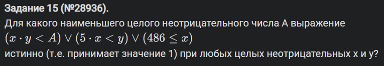
Еще одно наглядное доказательство живодерства. Опять же, вот такой, шаблонный код будет работать очень долго:
Это специально сделано. Здесь ответ больше . А как тогда? Перебирать не все подряд, а выборочно. Т.е. аналогично предыдущему:
Этот выполняется уже меньше минуты (у меня на компьютере). Но можно еще быстрее, если немного пораскинуть мозгами по поводу условия.
Еще быстрее
Итак, давайте подумаем когда у нас выражение выдает False. Это происходит при одновременном выполнении трех условий (поскольку там между скобками в функции стоит дизъюнкция т.е. or):
Для референса: оригинал
x * y < A- оригинальная первая скобкаy > 5 * x- оригинальная вторая скобкаx >= 486- оригинальная третья скобка
Развернутые условия
x * y >= A- отрицается первая скобкаy <= 5 * x- отрицается вторая скобкаx < 486- отрицается третья скобка
Причем последние 2 выражения вообще не зависят от A. Раз так, то если x и y такие, что последние 2 условия не выполняются, то чтобы выражение было True должно выполняться только первое условие т.е. A должно быть таким большим, чтобы превосходить произведение x * y.
Переформулирую
Таким образом, мы можем переформулировать задачу: нужно найти максимальное значение
x * yпри условияхy <= 5 * xиx < 486
Так как x и y неотрицательные, максимум будет при максимально возможном x и максимально возможном y. Максимальное x = 485, а максимальное y = 5 * x = 5 * 485 = 2425. Т.е. максимальное значение x * y = 485 * 2425 = 1176125. Однако, у нас A > x * y. Значит надо взять на единицу больше т.е. ответ здесь 1176126.
Соответственно, код:
Аналогичные рассуждения можно привести с примером 13. Там у нас была вот такая задача:
Здесь у нас выражение (78125 != y + 4x) or (A > x) and (A > y) может стать ложным тогда, когда первая скобка ложна т.е. 78125 == y + 4x.
Кста
Если что, то в питоне выражение выше читается как
(78125 != y + 4*x) or ((A > x) and (A > y)), посколькуandимеет приоритет выполнения выше чемor.
Стало быть, мы должны проверить только значения y = 78125 - 4x. Для всех остальных пар первая часть уже истинна, и A вообще не важно. Если же пара такая, что 78125 == y + 4x, то выражение спасается от ложности двумя скобками A > x и A > y. Значит, A должно быть больше и x, и y для всех таких пар. Поэтому мы ищем максимальное значение среди всех опасных x и y, а потом прибавляем 1.
Пример 15)
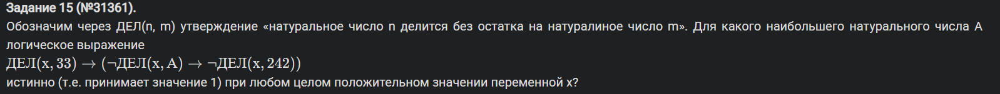
Пример 16)
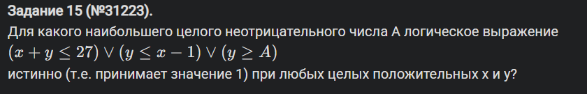
Пример 17)
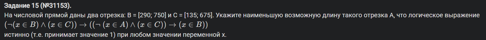
Ну, или руками конкретно этот прототип тоже можно.
Пример 18)
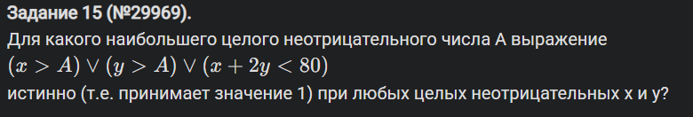